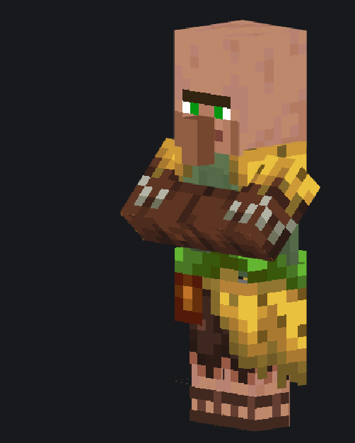

Пасхалка

-
Место спавна: Торговые судна
-
Редкость: нормальная
Поздравляю, ты нашёл пасхалку! Она единственная на этом сайте, даже не пытайся найти ещё (реально, просто не трать время в пустую). На самом деле даже удивительно, что кто то решил почитать информацию про жителя, который БУКВАЛЬНО ничего не делает. Так как это пасхалка, то она как то должна тебя отблагодарить, ибо просто так тебя пересылать в никуда было бы глупо. Хз чё придумать так что просто поведаю мини информацию из своей жизни, о которой я в интернете никогда не делился и хз буду ли. Короче раньше я смотрел одну стримершу по СП4 с ником san4o (читается как "Санчо"). Её стримы были примитивными, без большой аудитории и даже с плохим микро. Но в это был какой то свой вайб, что мне очень нравилось. Я начал частенько её смотреть на стримах и наблюдать за её рисованием персонажей в пеинт тул сай. Я так хорошо сблизился с ней и другими её подругами\корешами, которые седели в чате, что ощутил особый домашний уют. С того момента у меня был прикол, что я "обожаю санчо" и она даже нарисовала мне арт, который стоит у меня на аве в дискорд. Было это всё нуууу ооооочень давно, где то так в 2021 году. С того момента она перестала стримить давно и много воды утекло. Хах, даже закрыли СП4 и теперь есть СП5. Её кста звали Саня и я до войны думал поехать в Питер (она там живёт) посмотреть город с возможностью встретится. В этом не было никакой особой цели, лишь дружеская встреча, ничего лишнего не подумай. Крутим время вперёд, сегодня (конец 2024 года) я имею свою девушку (во всех смыслах ахахах), её также зовут Саня, через что теперь уже её я называю Санчо. Забавно вышло, сначала привязался (хоть и как друг) к одной девушке, а потом когда нашёл свою любовь, то уже её прозвал ником подруги. Если что, то я уже даже не вспоминаю оригинальную Санчо, когда называю её ник, теперь это просто прозвище. Короче надеюсь тебе было интересно это читать и теперь ты знаешь чуть больше других, лол. Ну и ещё сможешь понять смысл моего описание профиля в дискорд.